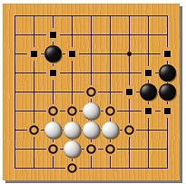

Each stone must have at least one "dame" (point of freedom,
respiratory item) - adjacent vertically or horizontally
idle point. Nearby a continuous chain related neighbors
stones form a group and share each other dames (that is,
any dame of any stone group refers simultaneously
to all the stones of this group).

The circles are labeled dames of white group
squares - dames of black groups.